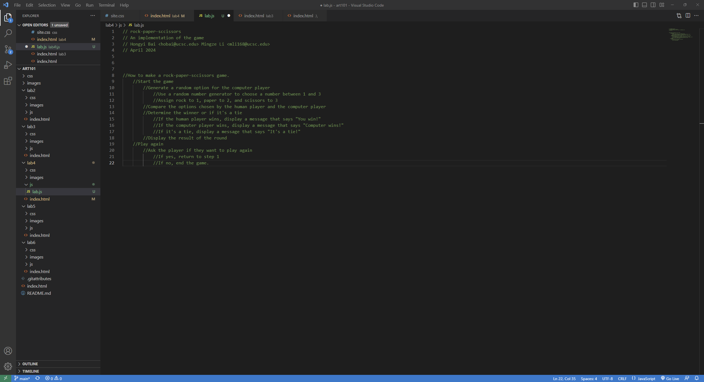

Lab 4: Pseudocoding and Problem-solving
Task 1: Pseudocode an everyday task
How to make a home-made pasta:
//Gather ingredients
//Flour
//Eggs
//Salt
//Water
//Make the dough
//Combine flour and salt in a bowl
//Create a well in the center of the flour mixture
//Add eggs into the well
// Mix the flour and egg mixture together until it forms a ball
//Knead the dough for 10-15 minutes until it's smooth and elastic
//Let the dough rest for at least 30 minutes.
//Roll the dough
//Divide the dough into smaller sections
//Roll out each section using a rolling pin or a pasta machine
//Cut the pasta into desired shapes and sizes
//Cook the pasta
//Boil a pot of salted water
//Add the pasta to the pot and cook for 2-3 minutes or until al dente
//Drain the pasta
Task 2: Pseudocode a simple computer game
How to make a rock-paper-sccissors game.
//Start the game
//Generate a random option for the computer player
//Use a random number generator to choose a number between 1 and 3
//Assign rock to 1, paper to 2, and scissors to 3
//Compare the options chosen by the human player and the computer player
//Determine the winner or if it's a tie
//If the human player wins, display a message that says "You win!"
//If the computer player wins, display a message that says "Computer wins!"
//If it's a tie, display a message that says "It's a tie!"
//Display the result of the round
//Play again
//Ask the player if they want to play again
//If yes, return to step 1
//If no, end the game.
Challenge
It was easy finishing the html file but I had some difficulty creating the pseudocode in details.
Problems
I don't really understand how the pre and code tags works but I think it's working for this lab.
Results
You are currently looking at the pseudocode of how to make rock-paper-sccissors game for this lab:
You are currently looking at the pseudocode of how to make a home-made pasta for this lab: